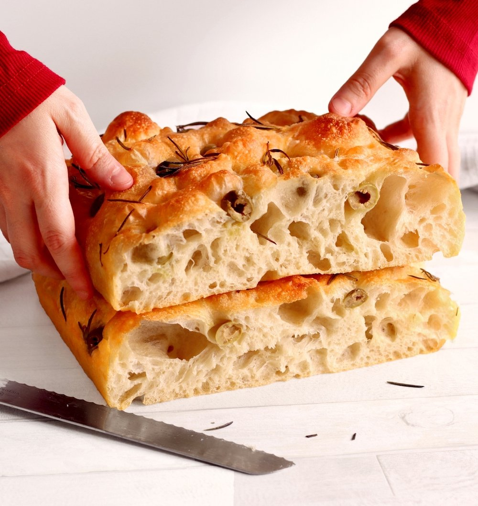

Odin Recipes
Back to Index
Focaccia Bread

Description
Focaccia is a form of Italian bread characterised by it's strechy, oily interior and well risen fluffy top.
When fresh, Focaccia is crispy on the outside and fluffy on the inside, turning entirely soft and fluffy
when
cooled down.
Equipment
- Oven
- 9x13 inch tray that's at least 2 inches deep
- Bowls & Mesuring instruments (Spoons and scales).
Ingredients
- 470g lukewarm water - should be somewhere between 27 and 37 degrees C
- 11g salt
- 1 tbsp extra virgin olive oil + plenty more for later
- 7g dried active yeast
- 560g bread (or any high protein) flour
- (OPTIONAL) Rosemary & Flaky Sea Salt for toppings.
Steps to create
- Make the Dough
- In a large bowl, combine water, salt, olive oil, yeast and give it a good whisk.
- Add the bread flour, mix using large spoon or spatula until well combined and hydrated. Don't be
afraid if it seems to wet or sticky.
- Scrape down the sides and cover bowl for 30 minutes.
- Streching and folding the Dough
- We need to perform 4 rounds of 'strech and folds'.
- Take one side of the dough, strech and fold bringing the dough to the opposite side.
- Rotate the bowl a quarter turn and repeat another 3 times.
- Cover the bowl and leave it for 30 minutes.
- Repeat this process another 3 times, leaving 30 minutes in between each round.
- Allowing the dough to Proof
- After completing the last of the strech and folds, cover the bowl with plastic wrap and place in
fridge overnight.
- Shaping focaccia and final proofing
- Take the tray, add 3 to 4 tbsp of olive oil, making sure to be generous as focaccia really demands
it.
- Grease the tray well, and if your tray isn't non-stick, use parchment paper too.
- Perform one last series of strech and folds and place your focaccia carefully into the tray.
- Drizzle the top with some more olive oil.
- Cover this (I know) yet again, and allow to proof one last time for at least 2 hours at room
temperature.
- After this last proof, drizzle the dough with a bit more olive oil as well as your hands.
- Use your oil covered hands to add dimples into the dough, going deep to the bottom of the pan and
across the entire pan.
- Then use your fingers to jiggle the dough which will create these uneven surfaces and bubbles in
your dough. Do NOT burst these bubbles!
- Add toppings of your choice and preheat your oven to 200 C with the fan on (if available).
- Once up to temperature, put your pan in there on the middle shelf and bake for 20 to 25 minutes
until its golden and crispy.
- I recommend not to open the oven door after placing the tray in until the timer has
run out, to make sure it doesn't collapse.
- Remove it from the oven, immediately getting the focaccia out and onto a cooling tray so it doesn't
go soggy.
- Allow to cool for 10 to 15 minutes before slicing and eating.